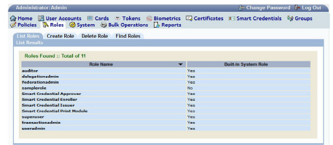
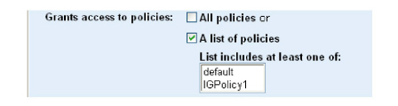
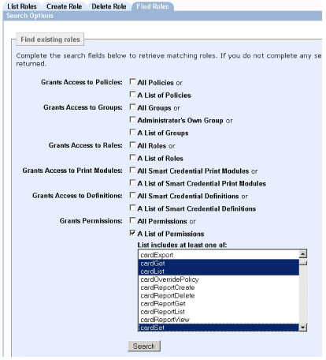

|
IdentityGuard Server 12.0 Administration Guide |
|
IdentityGuard Server 12.0 Administration Guide |
Before you can modify or delete a role, you need to locate it. You can view a list of all roles or search for roles with specific characteristics.
The Administration interface shows only those roles that the logged-in administrator is entitled to see—the administrator’s own roles and those in the role lists of the administrator’s roles.
1. Log in to the Entrust IdentityGuard Administration interface as the administrator.
 On the
Windows computer where Entrust IdentityGuard is installed
On the
Windows computer where Entrust IdentityGuard is installed
2. Select Roles on the menu bar.
3. Click the List Roles tab.
A list of all roles appears.

4. Click any role name to view information about the role.
To search for roles
5. Log in to the Entrust IdentityGuard Administration interface as the administrator.
On the
Windows computer where Entrust IdentityGuard is installed
2. Select Roles on the menu bar.
3. Click the Find Roles tab.
The Find existing roles pane appears. It displays a list you can use to specify characteristics of the role you want to find. For example, you can specify that you want to search for a role that grants an administrator access to all policies or specific policies, or you can search for a role that grants an administrator some specific permissions.
● Grants Access to Policies
● Grants Access to Groups
● Grants Access to Roles
● Grants Access to Print Modules
● Grants Access to Definitions
● Grants Permissions
Note: Characteristics that are not selected are not considered in the search. If you do not select any check boxes on this page, there is no filtering of the results. A list of all roles is returned.
4. For each characteristic of the role, select whether you want to search for all roles that have that general characteristic (select the All check box) or only roles that match a more specific definition of that characteristic (select the A List of check box to display a list from which you can select items).
Example 1:
To search for roles based on the policies they have access to, do one of the following under Grants access to policies:

● Select All policies to find roles with access to all policies.
OR
● To find roles that have one or more specific policies:
a. Select A list of policies.
b. Select one policy or more under List includes at least one of. (See Select options).
c. A role meets the search criteria if it has just one of the selected policies.
Note: Roles that grant access to All policies are not considered when searching for one or more individual policies. That is, when you do a search for All policies, the search results show the superuser role, but when you search for one or more individual policies, the superuser role does not appear in the search results, even though the superuser role includes access to all of the policies.
Example 2:
To find a role based on its permissions, do one of the following under Grants Permissions:

● Select All Permissions to find roles with all permissions.
OR
● To find roles that have one or more specific permissions:
a. Select A List of Permissions. (For information about specific permissions, see Permissions quick reference.)
b. Under List includes at least one of, select one or more permissions from the list. (See Select options.)
c. A role meets the search criteria if it has just one of the selected permissions.
Note: Roles that grant access to All permissions are not considered when searching for one or more individual permissions. That is, when you do a search for All Permissions, the search results show the superuser role, but when you search for one or more individual permissions, the superuser role does not appear in the search results, even though the superuser role includes all of the permissions.
5. Click Search.
The Search Results page appears.
6. Click any role name to open its role information.